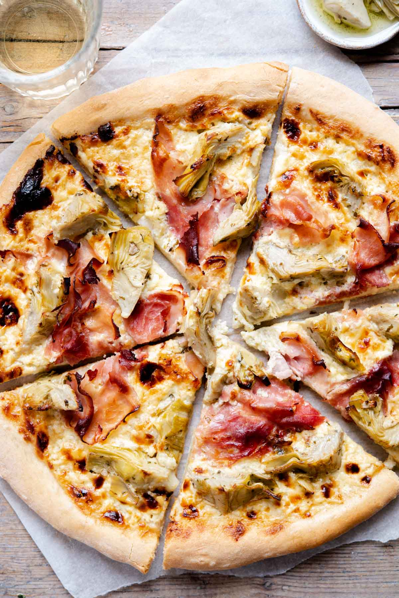

italian artichoke pizza

Description:
The most incredible Artichoke Pizza made with a super cheesy and delicious
white base and topped with marinated artichokes and prosciutto cotto
(Italian ham). Take your next pizza night to the next level!
ingredients:
- 4 cups* Italian 00 flour (500g) *spooned and leveled
- 2 teaspoon fast action dried yeast (7g)
- 1 ⅓ cups lukewarm water (320ml)
- 1 pinch salt
- ½ teaspoon sugar
- 1 tablespoon olive oil
extras:
1.5 cups sour cream,
2 cups gruyere or fontina cheese grated
4 large slices prosciutto cotto Italian ham
1 cup marinated artichoke hearts sliced (150g)
semolina flour for dusting
Steps
- Make the pizza dough
-
First, put the flour, sugar, salt and yeast in a large bowl making sure
to put the salt and yeast at opposite sides.
-
Add the water and olive oil and start to mix it together with a spoon or
spatula to form a rough dough.
-
Shape the dough into a ball and knead on a lightly floured surface for
around 10 minutes until the dough is smooth and elastic.
-
Shape the dough into a nice round ball and place in a lightly oiled
clean bowl. Cover with plastic wrap and sit the dough in a dry warm
place for 2-3 hours or until doubled in size.
-
Shape the dough into a nice round ball and place in a lightly oiled
clean bowl. Cover with plastic wrap and sit the dough in a dry warm
place for 2-3 hours or until doubled in size.
- Preheat the oven to 400°f/200°C.
-
Lightly dust two large baking trays with semolina flour, roll out the
dough to fit the trays. You want them around ¼ inch thick.
-
Mix the sour cream and grated cheese together. Spread half of the
mixture all over the base of each pizza.
-
Tear the slices of prosciutto and divide it between the pizzas, top with
equal amounts of artichokes.
-
Bake in the oven for around 15 minutes or until crispy and golden.